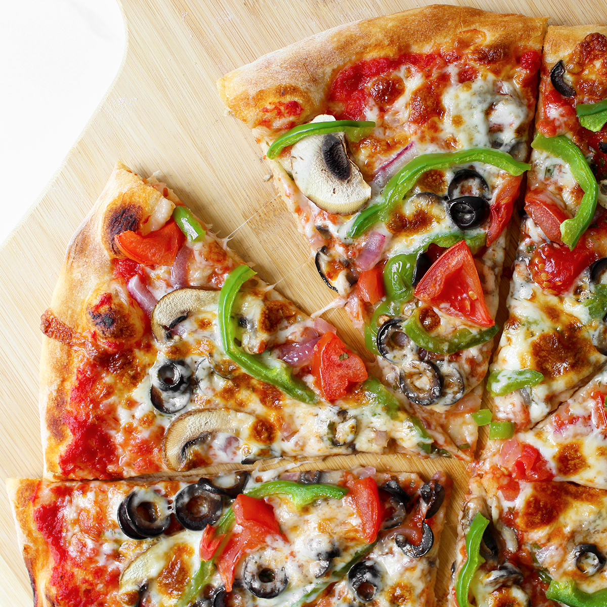

Ingredients:
- 1 pre-made pizza crust
- 1/2 cup tomato sauce
- 1 cup shredded mozzarella cheese
- 1/2 cup cherry tomatoes, halved
- 1/2 cup bell peppers, sliced
- 1/2 cup red onion, thinly sliced
- 1/2 cup black olives, sliced
- 1/4 cup fresh basil leaves
- 1/4 cup grated Parmesan cheese
- 1 tablespoon olive oil
- Salt and pepper to taste
Cooking Instructions:
- Preheat your oven to 425°F (220°C).
- Place the pizza crust on a baking sheet or pizza stone.
- Spread the tomato sauce evenly over the crust.
- Sprinkle the shredded mozzarella cheese over the sauce.
- Evenly distribute the cherry tomatoes, bell peppers, red onion, and black olives on top.
- Drizzle olive oil over the pizza and season with salt and pepper.
- Bake in the preheated oven for 12-15 minutes or until the crust is golden and the cheese is melted and bubbly.
- Remove from the oven and sprinkle fresh basil leaves and grated Parmesan cheese over the hot pizza.
- Slice and serve immediately.